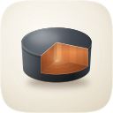
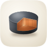
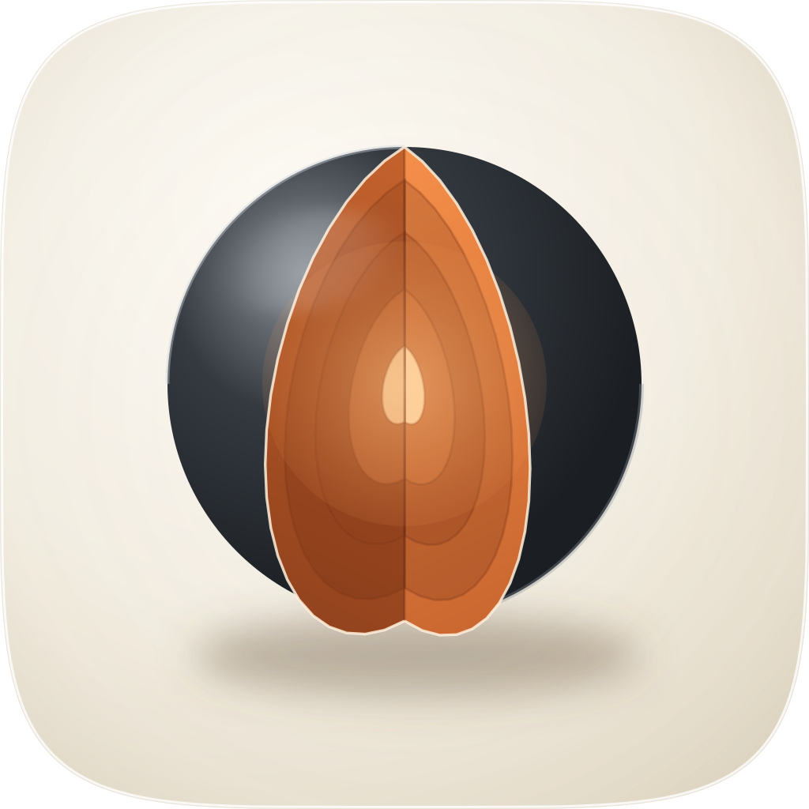
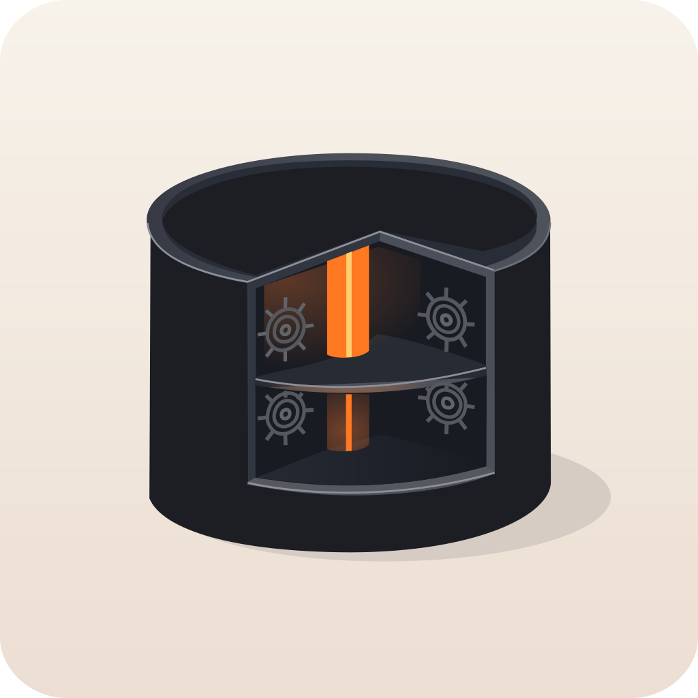
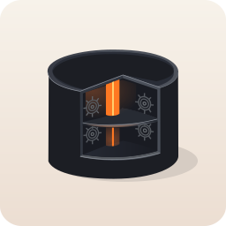
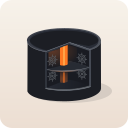
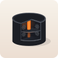
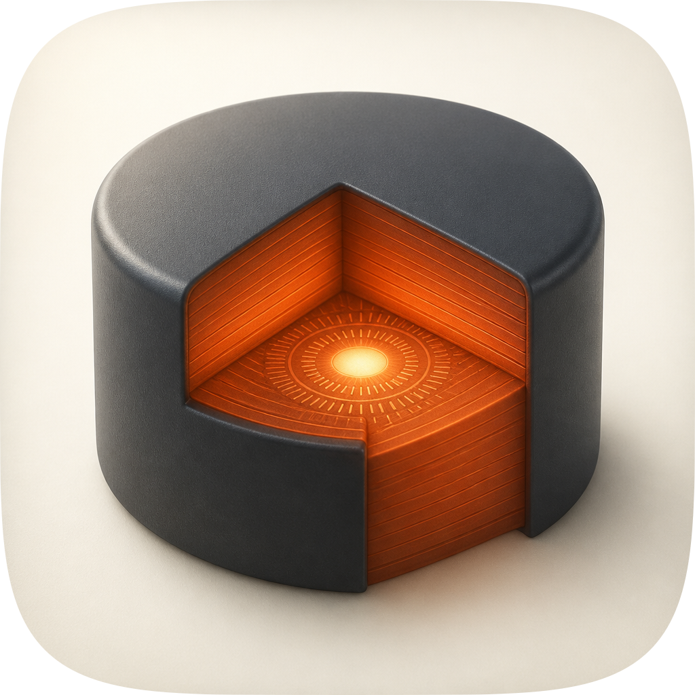
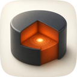
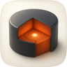

| Take | Hero at 1024, then renders at 128 / 64 / 48 / 32 / 16 css px (2× retina sources), plus the 16px squint magnified | Rubric | Verdict |
|---|---|---|---|
| A1 · icon.svghand-authored layered SVG (build_icon.py) — SHIPS |   |
11 / 12 | A stepped quarter-section through a soft graphite drum: horizontal shelf carrying concentric layers, fine gear ticks and a hot core, two vertical section walls carrying the same layers as strata. Checks 1–4 clear on the renders — the notch still names the object at 16px, and the silhouette is a drum with a wedge taken out of it. Measured on the 1024 render: shell 8.86:1 against the tile, cut face 3.60:1, accent bounded to 9.5% of the tile. Four real layer groups (bg / mid / fg / highlight), so identity is shape and value rather than hue. Loses one point on #8: the fillet stroke around the lid can read as a lid seam, which briefly says "container" instead of "solid". Material was rebuilt against take C over two rounds — beveled lid fillet, emissive core with its own flare, denser concentric mechanism, wall lift-and-fall lighting, warm ground bounce along the foot. |
| A2 · icon-engineA2-sphere.svghand-authored layered SVG, second solid |  |
8 / 12 | Lost on check #3, which is non-negotiable. The same quarter-wedge cut through a ball gives two flat half-disc faces with concentric shells — handsome at 1024 — but the outer silhouette stays a plain circle, so filled solid black it names nothing, and the two ember faces fuse into one leaf that reads as a seed or a pistachio rather than as two section planes. It also spends 15% of the tile on the accent for a weaker read. Its concentric-shell construction is what suggested the denser ring set now on A1's shelf. |
| B · icon-engineB-arrow.svgArrow 1.1 vector take (media-gen-pro, svg: true) |     |
6 / 12 | Lost on check #4. It read the brief as a hollow tank with two internal shelves rather than a solid opened up, so the interior is dark and the ember shrinks to a thin column at 1.5% of the tile — at 32px the column and the two ship's-wheel glyphs have already smeared into noise. Those wheels are exactly the category clip-art the direction forbids, and the light model changes between the lid and the interior. It also fails the structure gate outright — 0 named layer groups, so no layer plan and nothing to salvage as a plane. What it did contribute: seeing its interior read as a container is why A1 keeps a solid, layered mass rather than an empty shell. |
| C · icon-engineC-raster.pngGPT Image 2 raster, corpus-referenced — material target |    |
9 / 12 | Won the material read and cannot ship. Four corpus captures in the porcelain register (Safari, Reminders, Photos, News) bought a genuinely soft-touch matte shell, a generous rounded lid fillet, and an emissive core that lights the walls around it — all three are now in the master. It fails #1 and #10 as delivery: a flat pre-masked raster with opaque corners (audited here on its squircle-masked version) and no layers at all, so nothing survives Dark, Clear or Tinted. It also fails #2 — the drum runs to roughly 80% of the tile against the family's 55–65% band — and its ground is a flat cool white with no cushion, no rim and no vignette, which is the wrong register for this shelf. The section itself drifts hexagonal rather than a clean quarter. |
<image> embed, 94 paths and 28 KB inside the 400 / 200,000 envelope, and it passes fidelity.py structure. Checks 1–4 were read off the actual renders rather than the 1024 — the wedge is still the thing you see at 16px — and its material is take C's, ported by hand over two rounds rather than eyeballed. It matches the fledgeling set: porcelain ground, one ember accent from the #C4622D family, the shared squircle from assets/squircle-path.txt. Known liabilities to revisit: the lid fillet can read as a seam, so the drum occasionally says "container" before it says "solid"; the two section walls fuse into one ember mass below 32px, leaving the notch shape to carry identity alone; the accent is 9.5% of the tile, which is generous for a family that usually spends less, and under a heavy mono tint the shelf's concentric layers flatten to a single value; and the drum is a squat cylinder, which sits close to dossier-report's disc stack in a lineup at 16px, though the notch separates them by 32px.python3 scripts/audit_sheet.py render <dir> (1024 / 256 / 128 / 96 / 64 / 32 sources); verified by its check subcommand.
| measured on the 1024 render | A1 | A2 | B | C |
|---|---|---|---|---|
| shell against the tile (WCAG contrast) | 8.86:1 | 12.81:1 | 13.40:1 | 8.00:1 |
| cut face against the tile | 3.60:1 | 3.65:1 | 3.53:1 | 5.77:1 |
| accent share of the tile | 9.5% | 15.0% | 1.5% | 19.7% |
| structure gate (paths / named layers) | pass 94 / 4 | pass 26 / 4 | fail 39 / 0 | n/a raster |